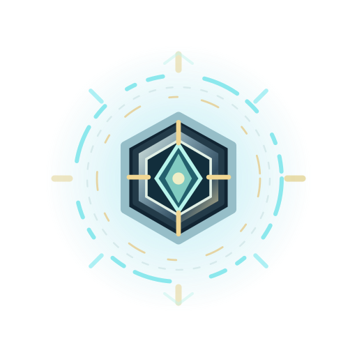

Salvage / Reward Beacon
Oryginalny animowany efekt lokalizatora nagrody. Jest to warstwa kosmetyczna — nie generuje nagrody, nie zmienia ekonomii ani nie obsługuje podnoszenia części.

Skróty: Spacja — Play/Pause, strzałki lewo/prawo — klatka. Podgląd pokazuje prawdziwe zewnętrzne pliki SVG.
Codex może zaimportować atlas PNG lub osiem osobnych klatek jako Sprite po zatwierdzeniu wizualizacji. Brak przypisania do istniejących stanów gry.